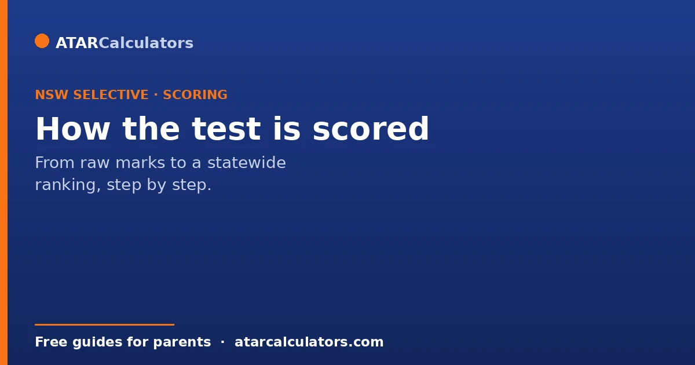
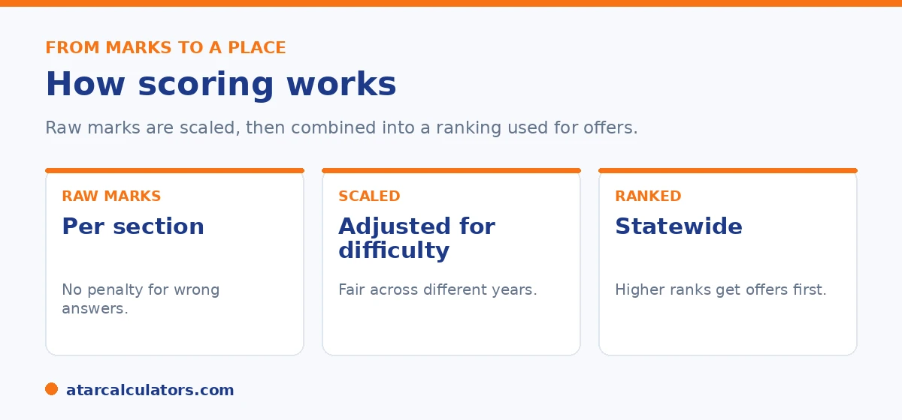

Here is the short version. Each of the four sections is marked, then raw marks are converted to scaled scores that adjust for how hard that year's paper was. The scaled scores are combined into a single placement score, which ranks every candidate across the state. The four sections are widely reported to count equally, though the Department does not publish exact weightings. There is no penalty for wrong answers on the multiple-choice sections, and no score total is published.
The scoring behind selective entry can feel like a black box, partly because the Department keeps a lot of it private. The general process, though, is clear enough to explain.
Below is each step, from marking to ranking. To estimate where a result might sit, use our NSW selective calculator.
Key takeaways
- Each section is marked, then raw marks become scaled scores.
- Scaling adjusts for how hard that year's paper was.
- The scaled scores combine into one placement score.
- The placement score ranks every candidate statewide.
- The four sections are widely reported to count equally.
- There is no penalty for wrong answers on the multiple-choice sections.
The four sections that feed the score
The placement score is built from four sections: Reading, Mathematical Reasoning, Thinking Skills, and Writing. Three are multiple choice, and Writing is one typed task marked by trained assessors.

Each section is scored separately, and each is reported as its own result. This is why a weak section can pull down an otherwise strong profile.
Step one: raw marking
First, the raw marks are counted. For the three multiple-choice sections, there is no penalty for a wrong answer. So your child should try every question and never leave a blank. A guess can only help.
For Writing, trained assessors mark the typed response against set criteria. They look at ideas, structure, and control of language, and whether the writing addresses the task.
Step two: scaling for difficulty
Raw marks on their own do not compare well, because one year's paper may be harder than another's. So raw marks are converted into scaled scores. Scaling adjusts for difficulty, so a scaled score means the same thing across different years and test versions.
This is why a raw mark out of the question count tells you very little. A scaled score is what allows fair comparison between students who sat slightly different papers.
Want a rough estimate from practice results?
Try the NSW selective calculator →Step three: combining into a placement score
The four scaled scores are combined into a single placement score. In the current model, the four sections are widely reported to count equally, at one quarter each. That is a change from the older scheme, where Thinking Skills counted for more and Writing for less.
One important caution: the Department does not publish the exact weightings or the score total. So while equal weighting is the common understanding, treat any precise figure as an estimate. See our guide on how the sections are weighted for more.
Step four: ranking and offers
The placement score ranks every candidate across the state. Offers then go to the highest ranked students for each school they listed as a preference. Because it is a ranking, there is no fixed pass mark, and the line shifts each year with the cohort.
An equity placement model and gender balance also shape offers, so rank is not the only factor. For the full picture, see our guide to how entry works.
What about school assessment?
Older guides describe a large school assessment component. That changed in the redesign, which cut the role of school-supplied marks sharply. The placement score is now driven by the test itself.
There is also a provision so that students who have no school assessment mark are not disadvantaged, with their result rescaled. As always, the Department's own pages are the place to confirm the current rules.
This change matters for families relying on older advice, so it is worth stating plainly what it means today. In the past, a child’s own school supplied assessment marks that formed a substantial part of the selection calculation. A strong school record could meaningfully lift a placement. The redesign cut that role sharply. So the placement score is now driven overwhelmingly by performance on the entrance test itself.
The practical implications are twofold. First, preparation should be aimed squarely at the test, since that is what decides placement. Hoping that strong classroom results will carry a child into a selective school is no longer a sound strategy. Second, the reduced weight on school assessment removes a source of inconsistency. School marks were never directly comparable between different schools. Removing that weight levels the field, so all applicants are judged mainly on the same standardised test.
There is still a provision for students without a school assessment mark. It exists so no child is penalised simply because a mark was unavailable, and their result is rescaled accordingly. The rules around these components can be adjusted, so the Department’s official pages are always the definitive source for the current year.
The headline for planning is clear. Focus preparation on the entrance test. Treat the school-assessment component as a minor factor rather than a lever to lean on. And read any older guidance describing a large school-mark contribution as out of date.
What families get
Families do not get a raw mark, a percentage, or a rank. Instead, the report shows a performance band for each section. The bands describe roughly where your child sat compared with others.
This keeps the focus on strengths and weaker areas rather than a single number. It also means a near miss can be diagnosed by section rather than guessed at.
The equity consideration
Alongside the main placements, some places are set aside through an equity process. This supports students from disadvantaged backgrounds who show strong potential but may not test as highly as more resourced peers.
So the placement system is not purely a ranked list of raw scores. A share of places recognises potential in context, which is worth knowing when you read about cut-offs.
Why you will not get a full mark breakdown
Families receive a placement outcome, not a detailed section-by-section raw score. The Department does not release the full breakdown, partly because the scaling that makes sections comparable is not a simple mark out of a total.
So do not expect a neat report card of raw marks. What you get is the result of the placement process, which is what actually decides offers.
The role of Thinking Skills
Thinking Skills is often the least familiar section for families. It tests reasoning and problem-solving rather than curriculum content, and it counts toward the placement score alongside the other sections.
So it rewards clear, logical thinking more than memorised knowledge. Because many children have seen less of this style of question, a little exposure to reasoning problems can make a real difference to how comfortable they feel.
Familiarity lets ability show
Comfort with the format and question styles matters. A capable child who has never seen this kind of test can lose marks simply to unfamiliarity, not lack of ability.
So some exposure to the sections, especially the less familiar Thinking Skills, helps their true ability come through. The goal is not to drill answers, but to make sure the format itself never gets in the way on the day.
Common questions
How is the NSW selective test scored?
Each section is marked. Raw marks are converted to scaled scores that adjust for difficulty. The scaled scores are then combined into a placement score that ranks every candidate statewide. Offers go to the highest ranked students.
Are the components weighted equally?
In the current model they are widely reported to count equally, at one quarter each, replacing an older scheme where Thinking Skills counted more. The Department does not publish exact weightings, so treat precise figures as estimates.
Is school assessment included in the score?
Its role was cut sharply in the redesign, and the placement score is now driven by the test. A provision ensures students without a school assessment mark are not disadvantaged.
What is the maximum placement score?
The Department does not publish a score total or maximum. The old 300-point system is gone, and current totals seen online are estimates rather than official figures.
Is there negative marking?
No. There is no penalty for a wrong answer on the three multiple-choice sections, so your child should try every question. Writing is marked by assessors against set criteria.
What is a scaled score?
It is a raw mark converted onto a common scale that adjusts for how hard a given year's paper was. Scaling lets results compare fairly across different years and test versions.
How does the ranking decide offers?
The combined placement score ranks every candidate statewide. Offers go to the highest ranked students for each school they nominated, with an equity model and gender balance also affecting outcomes.
Estimate where a result might sit
Enter practice section results for a rough competitiveness guide. Free, and no signup.
Open the NSW selective calculator →Related guides
This guide is general information for parents, not formal advice. The NSW Department of Education sets the rules, and details like dates, weightings and the equity model can change. It does not publish section weightings, the score total, or school cut-off scores. So always confirm current details on the official NSW selective high schools pages. Reviewed by the ATARCalculators Editorial Team.